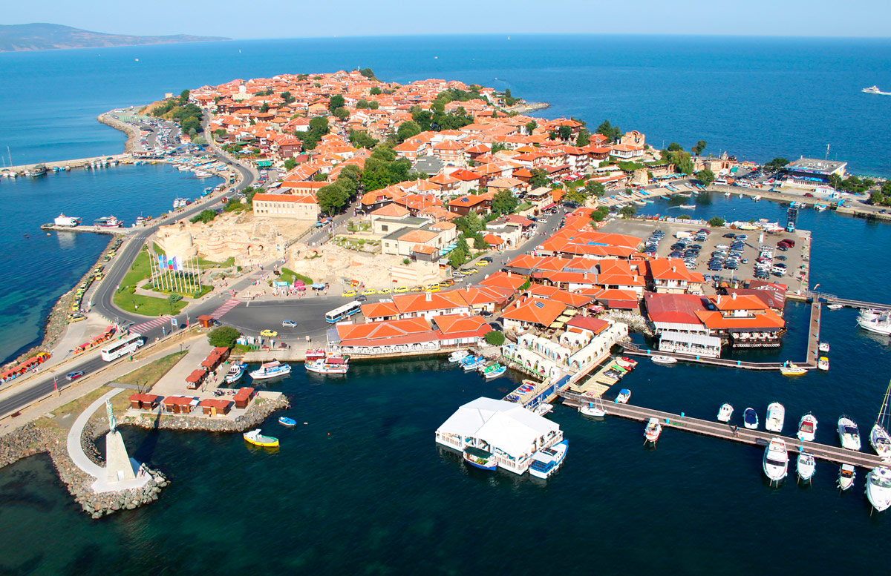

Туры в Турцию
 Слово «Турция» давно приобрело для российских туристов свою особенную эмоциональную окраску. Тур в Турцию, пусть он первый или уже десятый, всегда является долгожданным и обязательно счастливым для любого человека. Для любого, потому что люди абсолютно разных возрастов и складов характера смогут насладиться каждой минутой, проведенной на лучших курортах Турции: Кемер, Белек, Сиде, Аланья, Анталья, Фетхие, Мармарис.
Слово «Турция» давно приобрело для российских туристов свою особенную эмоциональную окраску. Тур в Турцию, пусть он первый или уже десятый, всегда является долгожданным и обязательно счастливым для любого человека. Для любого, потому что люди абсолютно разных возрастов и складов характера смогут насладиться каждой минутой, проведенной на лучших курортах Турции: Кемер, Белек, Сиде, Аланья, Анталья, Фетхие, Мармарис.
Туры в Таиланд
Традиционно популярен среди наших туристов, и это не случайно. Осенью, зимой и ранней весной, когда в Ярославле ненастье, дожди, снег или сильный мороз, в Таиланде устанавливается комфортная, теплая, солнечная погода (температура воздуха в среднем около 30 градусов, морской воды – 26 градусов). Здесь лето круглый год, удивительная и разнообразная флора и фауна, живописные песчаные пляжи с коралловыми рифами, экзотические фрукты и увлекательные экскурсии, богатая культура и история, знаменитое тайское гостеприимство – все это манит туристов в страну снова и снова.
Туры в Испанию
Испания располагается на Пиренейском полуострове и омывается Средиземным морем и Атлантическим океаном. В ее состав входят Балеарские и Канарские острова.Испания – государство с очень древней культурой и благоприятным климатом. Туры в Испанию – это посещение разнообразных курортов с высокоразвитой инфраструктурой и обширной программой экскурсий.
|
Туры в Тунис
 Тунис — это несколько километров фантастических песчаных пляжей на побережье Средиземного моря, необъятные просторы пустыни Сахары, раскалённой жгучим солнцем, леса пробкового дерева и оливковые плантации. Это пряный аромат жасмина, живописные города и самые лучшие курорты Туниса: остров Джерба, Хаммамет, Сусс, Махдия и Монастир. Миллионы туристов едут в Тунис, привлекаемые возможностями разнообразного отдыха. Забронировав тур в Тунис, вы сможете позагорать на белоснежных пляжах, насладиться морскими прогулками, пройти курс талассотерапии, посетить уникальные экскурсии и весело развлечься!
Тунис — это несколько километров фантастических песчаных пляжей на побережье Средиземного моря, необъятные просторы пустыни Сахары, раскалённой жгучим солнцем, леса пробкового дерева и оливковые плантации. Это пряный аромат жасмина, живописные города и самые лучшие курорты Туниса: остров Джерба, Хаммамет, Сусс, Махдия и Монастир. Миллионы туристов едут в Тунис, привлекаемые возможностями разнообразного отдыха. Забронировав тур в Тунис, вы сможете позагорать на белоснежных пляжах, насладиться морскими прогулками, пройти курс талассотерапии, посетить уникальные экскурсии и весело развлечься!
Туры в ОАЭ
 Объединенные Арабские Эмираты расположены в юго-западной Азии и омываются водами Персидского и Оманского заливов. ОАЭ – это и очарование экзотики восточной сказки, и западные стандарты обслуживания. Первоклассные ювелирные магазины, гигантские торговые центры, незабываемый шопинг. Страна арабских шейхов, поражающих воображение небоскрёбов, самых лучших в мире гостиниц. На пляже каждого Эмирата песок своего оттенка белого, а посреди пустынь цветут сады. Тур в ОАЭ позволит вам познакомиться с богатой экскурсионной программой, даст прекрасные возможности для активного отдыха и насыщенной ночной жизни. Здесь делается все возможное, чтобы отдых был интересным и комфортным: совершенствуется инфраструктура и работа служб индустрии гостеприимства. В Эмиратах туристов всегда ждет радушный прием, атмосфера дружелюбия и полной безопасности.
Объединенные Арабские Эмираты расположены в юго-западной Азии и омываются водами Персидского и Оманского заливов. ОАЭ – это и очарование экзотики восточной сказки, и западные стандарты обслуживания. Первоклассные ювелирные магазины, гигантские торговые центры, незабываемый шопинг. Страна арабских шейхов, поражающих воображение небоскрёбов, самых лучших в мире гостиниц. На пляже каждого Эмирата песок своего оттенка белого, а посреди пустынь цветут сады. Тур в ОАЭ позволит вам познакомиться с богатой экскурсионной программой, даст прекрасные возможности для активного отдыха и насыщенной ночной жизни. Здесь делается все возможное, чтобы отдых был интересным и комфортным: совершенствуется инфраструктура и работа служб индустрии гостеприимства. В Эмиратах туристов всегда ждет радушный прием, атмосфера дружелюбия и полной безопасности.
Туры в Болгарию

Болгария — одна из самых близких по духу для жителей России европейская страна. Расположившись на пересечении западных и восточных путей, на побережье Черного моря, она присоединила к своим уникальным чертам лучшие особенности других стран и таким образом создала оптимальные условия для отдыха на своей территории. Туристы, которые приобрели туры в Болгарию, прибывают в международные аэропорты городов Бургас или Варна. Давно известные и новые курорты легко заслуживают любовь туристов благодаря тому, что полностью соответствуют запросам современных путешественников и мировым стандартам.
|